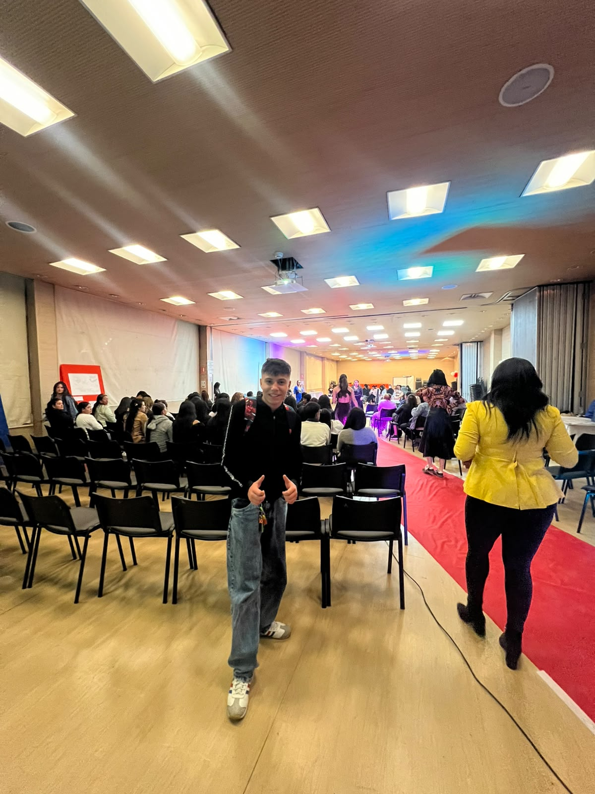
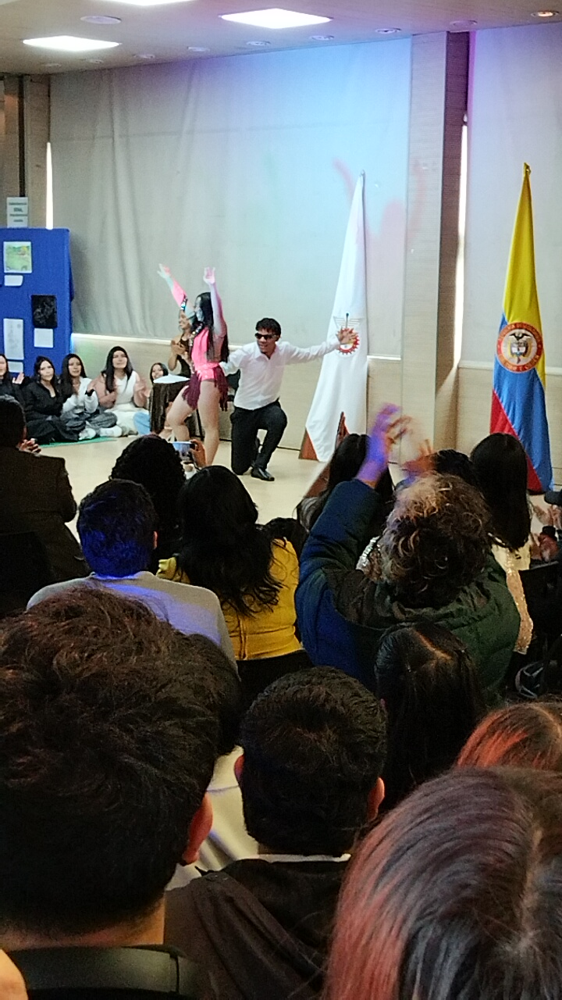
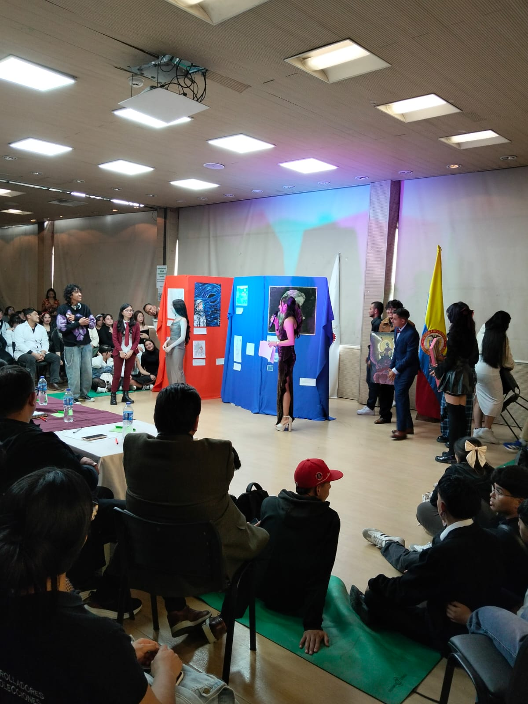
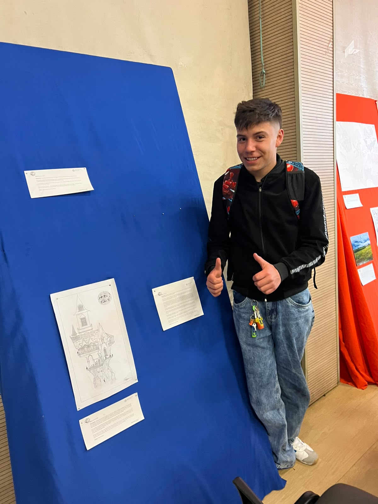
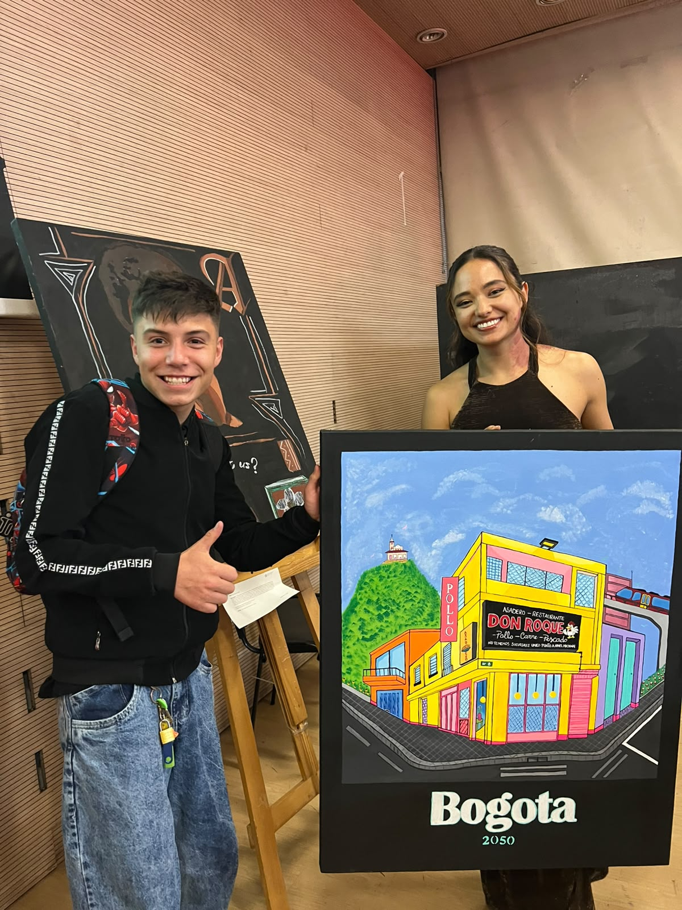
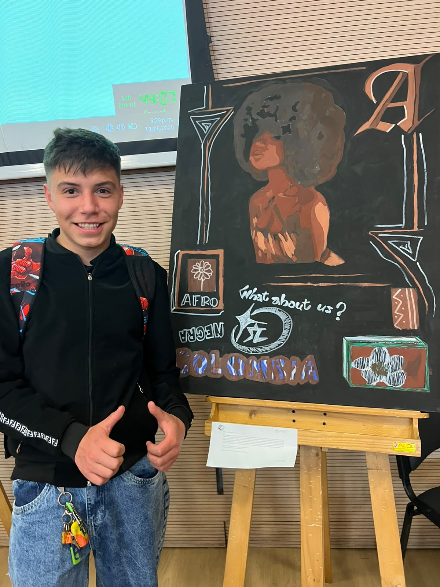
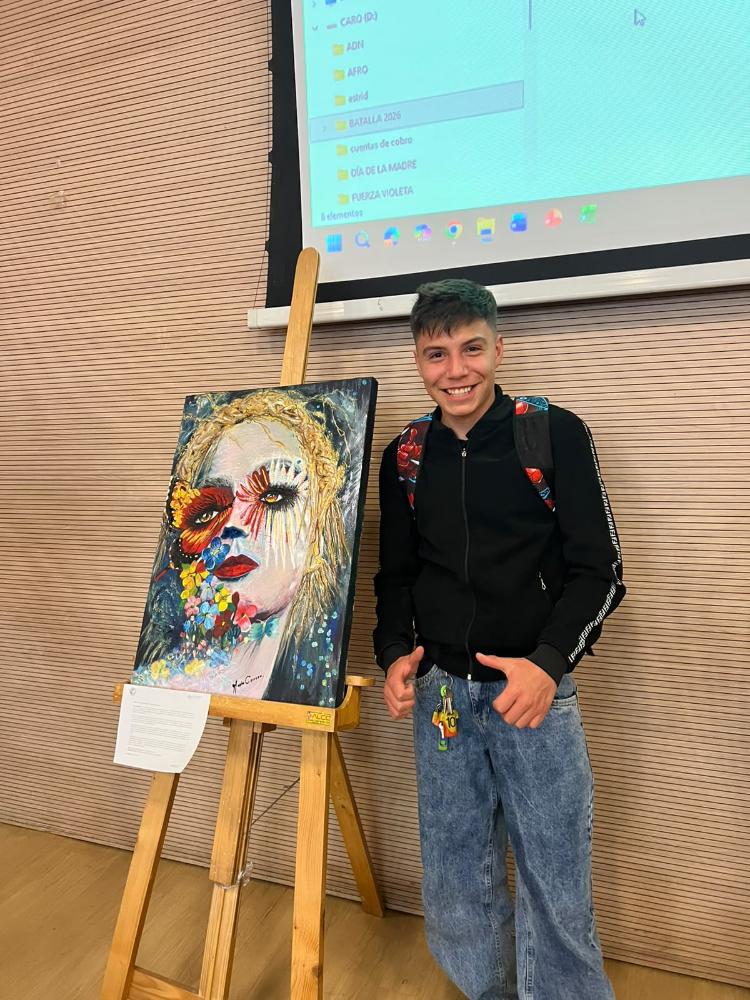
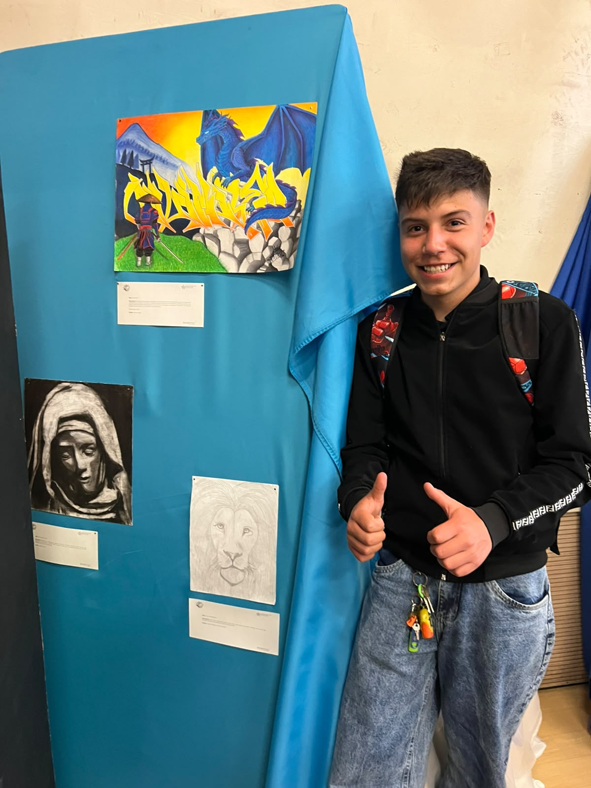
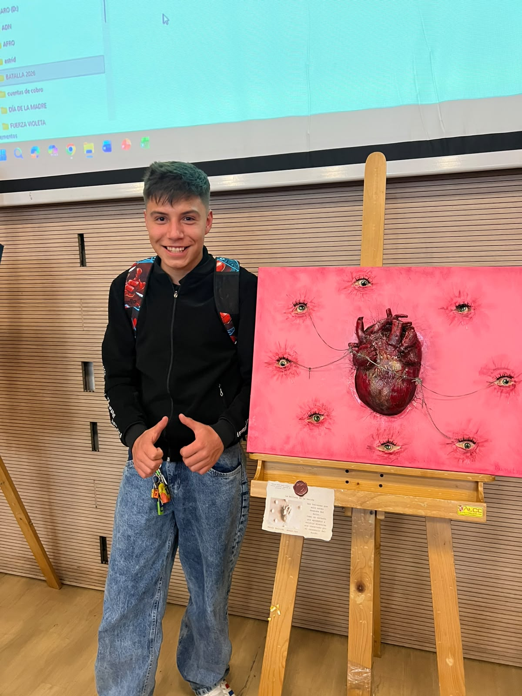
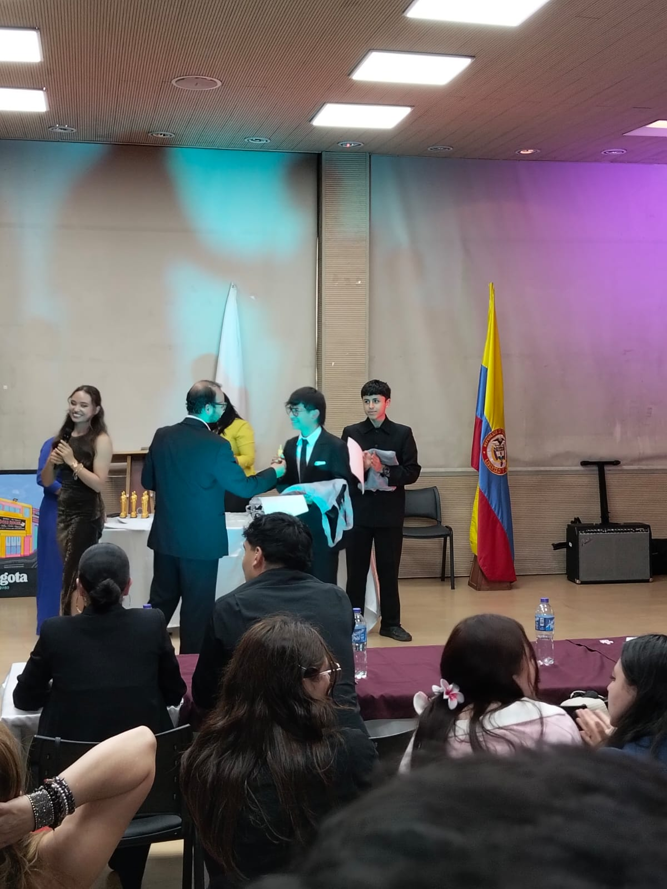

El Auditorio y la Apertura
Inicio de la jornada cultural en un gran auditorio con pasarela roja, donde la comunidad se reúne para presenciar las muestras artísticas y ponencias principales del evento.
Un recorrido completo por las muestras, presentaciones y reconocimientos del evento

Inicio de la jornada cultural en un gran auditorio con pasarela roja, donde la comunidad se reúne para presenciar las muestras artísticas y ponencias principales del evento.

Una vibrante muestra de danza y artes escénicas en vivo que cautiva al público asistente, llenando el espacio de movimiento, música y expresividad corporal.

Espacio centralizado en la tarima principal para la presentación oral de los proyectos artísticos, permitiendo a los creadores conectar directamente con los evaluadores y el público.

Presentación de ilustraciones detalladas en tinta sobre paneles de exposición, destacando el dibujo arquitectónico y de fantasía junto a sus fichas técnicas explicativas.

Una mirada colorida e imaginativa hacia el futuro urbano. Esta pintura resalta las fachadas tradicionales bogotanas mezcladas con elementos futuristas y el icónico cerro de Monserrate.

Un lienzo imponente que explora las raíces, las preguntas de identidad con la frase "What about us?" y un tributo a la riqueza cultural de las comunidades negras en Colombia.

Un retrato expresionista lleno de texturas y vibrantes colores florales que cubren el rostro, fusionando la anatomía humana con la belleza botánica en el caballete.

Muestra artística en panel azul que integra diferentes técnicas: desde graffiti e ilustraciones inspiradas en la cultura oriental, hasta retratos clásicos sombreados a lápiz.

Una impactante pintura surrealista sobre fondo rosado que expone un corazón central interconectado mediante finas líneas y cadenas hacia múltiples miradas vigilantes a su alrededor.

El momento culminante del evento: la ceremonia de premiación en tarima donde se hace entrega oficial de galardones y menciones de honor por el talento y esfuerzo demostrado.